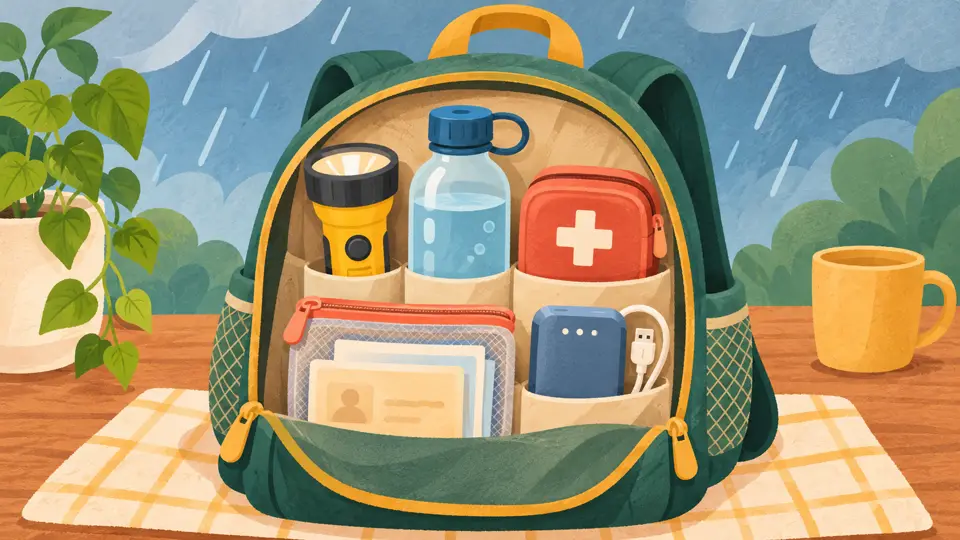

Antes de la lluvia
Prepara tu casa
Revisa coladeras, techos y cables sueltos. Guarda tus documentos en una bolsa que no deje pasar el agua y acuerda con tu familia cómo comunicarse
Qué hacer antes, durante y después de una tormenta

Revisa coladeras, techos y cables sueltos. Guarda tus documentos en una bolsa que no deje pasar el agua y acuerda con tu familia cómo comunicarse
Quédate en un lugar seguro. No cruces arroyos ni calles inundadas, aunque el agua se vea baja
Baja la velocidad y busca otra ruta. Si el agua tapa el camino, detente en un lugar seguro y sigue las indicaciones oficiales
No te acerques a zonas dañadas ni toques cables caídos. Reporta los riesgos y sigue pendiente de los avisos oficiales